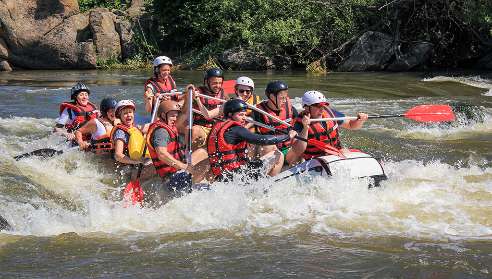
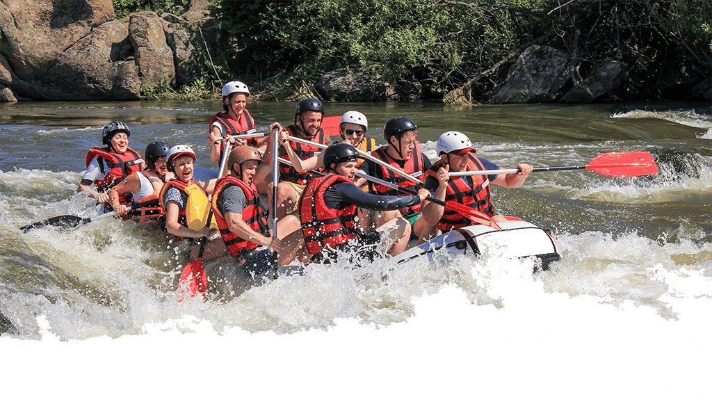

Day Out Expeditions
History

Founded in 1995 by a group of adventure enthusiasts, Day Out Expeditions started with a handful of rafts and a passion for exploration. What began as a small venture has grown into a leading provider of whitewater rafting experiences known for safety, excitement, and unforgettable connections with nature.
Adventure Awaits You!
At Day Out Expeditions, our whitewater rafting trips are designed to give thrill-seekers unforgettable experiences on the water. Our expert guides ensure safety while navigating beautiful scenery and challenging rapids. Oars Up your next adventure begins here!
Book a Trip